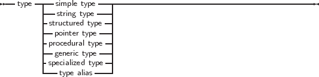

All variables have a type. Free Pascal supports the same basic types as Turbo Pascal, with some extra types from Delphi as well as some of its own.
The programmer can declare his own types, which is in essence defining an identifier that can be used to denote this custom type when declaring variables further in the source code. Declaring a type happens in a Type block (section 16.5, page 836), which is a collection of type declarations, separated by semicolons:
_________________________________________________________________________________________________________
Type declaration
___________________________________________________________________
There are 8 major kinds of types :
_________________________________________________________________________________________________________
Types

___________________________________________________________________
Each of these cases will be examined separately.